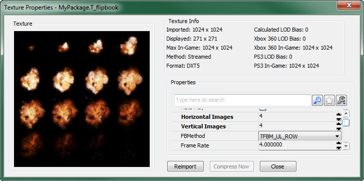
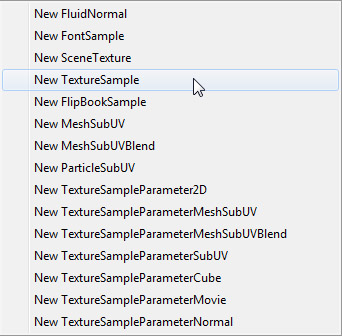
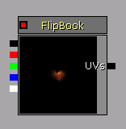

UDN
Search public documentation:
FlipbookTexturesCH
English Translation
日本語訳
한국어
Interested in the Unreal Engine?
Visit the Unreal Technology site.
Looking for jobs and company info?
Check out the Epic games site.
Questions about support via UDN?
Contact the UDN Staff
日本語訳
한국어
Interested in the Unreal Engine?
Visit the Unreal Technology site.
Looking for jobs and company info?
Check out the Epic games site.
Questions about support via UDN?
Contact the UDN Staff
翻书贴图 (Flipbook Textures)
概述
导入翻书贴图
 只要您已经在内容浏览器中导入了这个翻书贴图之后，它将会显示标准的贴图尺寸和格式，后面紧接着的是 flipbook 的规格。比如，当导入一个 256x256 的贴图作为一个 flipbook 时，它将会显示为"256x256[DXT1] 1x1"。
只要您已经在内容浏览器中导入了这个翻书贴图之后，它将会显示标准的贴图尺寸和格式，后面紧接着的是 flipbook 的规格。比如，当导入一个 256x256 的贴图作为一个 flipbook 时，它将会显示为"256x256[DXT1] 1x1"。
 在翻书贴图属性中更改规格后，内容浏览器中的信息将会更新来反映这些更改。
在翻书贴图属性中更改规格后，内容浏览器中的信息将会更新来反映这些更改。
 关于导入贴图的更到信息，请查看导入贴图指南页面。
关于导入贴图的更到信息，请查看导入贴图指南页面。
翻书贴图属性

翻书贴图包含所有常规贴图所具有的全部属性，其中还添加了针对翻书贴图的属性。要打开翻书贴图的属性，只需在内容浏览器中双击它或者右击然后从关联菜单中选择 属性 (Properties)... 。- HorizontalImages(水平方向的图像量) -子图像的列数。
- VerticalImages(垂直方向的图片数量) -子图像的行数。
- FBMethod -迭代子图像的方法。该属性的选项包括：
| 选项 | 描述 |
|---|---|
| TFBM_UL_ROW | 从左上角的子图像开始，依次走到右边，然后从下一行的最左端再次开始，并重复上述步骤。 |
| TFBM_UL_COL | 从左上角的子图像开始，依次走到最下端，然后跳转到该列右侧的下一列的最上端，并重复上述步骤。 |
| TFBM_UR_ROW | 从右上角的子图像开始，一次走到左边，然后从下一行的最右端再次开始，并重复上述步骤。 |
| TFBM_UR_COL | 从右上角的子图像开始，依次走到最下端，然后跳转到该列左侧的下一列的最上端，并重复上述步骤。 |
| TFBM_LL_ROW | 从左下角的子图像开始，依次走到右边，然后从上一行的最左端再次开始，并重复上述步骤。 |
| TFBM_LL_COL | 从左下角的子图像开始，依次走到最上端，然后跳转到该列右侧的下一列的最底端，并重复上述步骤。 |
| TFBM_LR_ROW | 从右下角的子图像开始，依次走到左边，然后从上一行的最左端再次开始，并重复上述步骤。 |
| TFBM_LR_COL | 从右下角的子图像开始，依次走到最上端，然后跳转到该列左侧的下一列的最底端，并重复上述步骤。 |
| TFBM_RANDOM | 随机选择下一个图像。 |
- FrameRate - 每分钟翻过图像的速率，比如，4 就意味着每秒钟翻过4张图像。
在材质中使用翻书贴图

如果完成上述操作后在内容浏览器中选择了翻书贴图，那么会自动赋给它这个新的 FlipBookSample 表达式。否则，您可以选择 FlipBookSample 并使用 按钮将这个翻书贴图赋给它的 贴图 (Texture) 属性。赋值完成后，您应该可以预览 flipbook 动画，前提是在材质编辑器中启用了实时预览。
按钮将这个翻书贴图赋给它的 贴图 (Texture) 属性。赋值完成后，您应该可以预览 flipbook 动画，前提是在材质编辑器中启用了实时预览。
